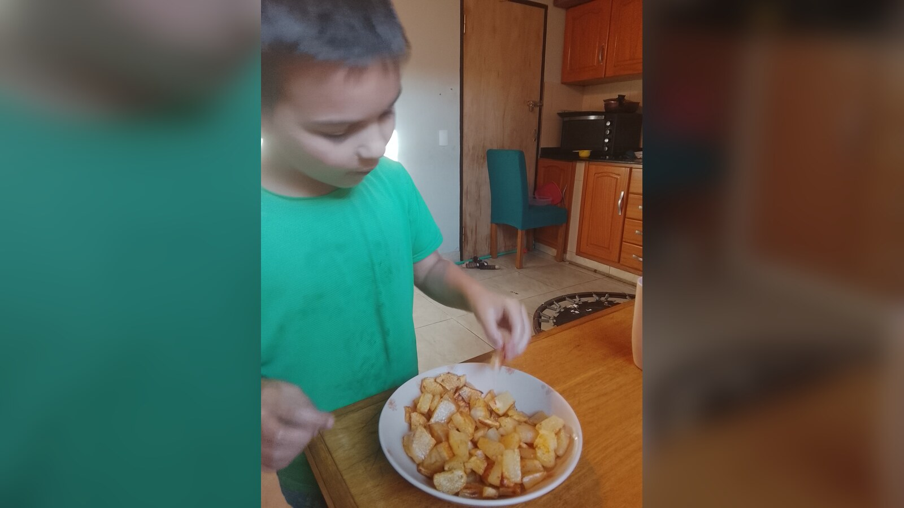

Meaningful Work for Adults With Intellectual Disabilities
Meaningful work is real, useful, supported, and connected to the person’s preferences—not activity created merely to keep someone busy.

What makes work meaningful for an adult with an intellectual disability?
A paycheck can matter. So can pride, routine, relationships, learning, contribution, and the knowledge that a task is genuinely useful. The important word is not simply work. It is meaningful.
Too often, disabled adults are offered one of two extremes: a conventional job they are expected to fit without enough support, or repetitive activities that look productive but have little connection to their interests or anyone’s real needs.
A task becomes meaningful because it fits a real person and serves a real purpose, not because it resembles work from a distance.
Start with fair access to paid work
Adults with intellectual disabilities should not be screened out of employment because they need support, communicate differently, learn slowly, or cannot manage every part of a standard job description.
The Department of Labor describes customized employment as matching a person’s strengths, needs, and interests with an employer’s needs. That can mean negotiating duties, schedule, supervision, or how work is performed. Supported employment can add coaching, transportation planning, communication support, and ongoing assistance.
When the arrangement is employment, disability is never a reason to disguise unpaid labor as therapy. Fair wages and protections still matter.
Meaningful responsibility also exists at home
Not every useful task is a job. Adults cook, clear tables, care for belongings, help relatives, prepare for visitors, and contribute to the rhythms of home without calling those acts employment.
An adult may carry groceries, choose ingredients, rinse vegetables, place food on a tray, fold towels, water plants, refill supplies, or help set up a favorite weekly activity. The task does not become meaningless because support is present. Shared work is still work.
This connects to meaningful daily activities, but the emphasis here is responsibility: the person’s action contributes to something that truly needs doing.
Food preferences can lead to kitchen participation
Sam has a lot of opinions about food. I would not call him a picky eater. He often prefers one thing with plenty of flavor rather than several foods combined. He is not a casserole guy, but he may eat a great deal of the single food he likes.
In the photograph, he is testing what I believe is mandioca fried with paprika and salt. I prepared it; the image does not prove that he cooked it. But his attention to food, willingness to taste, and strong preferences are useful information about where kitchen participation might begin.
He already tries to help in the kitchen, which is sweet. As he grows, he can keep trying more: choosing foods, carrying ingredients, placing something in a bowl, seasoning with help, moving safe items to the table, or helping clean up. The goal is not to turn every enjoyable food moment into training. It is to notice where interest and real household life meet.
Good work fits the person
A meaningful role should be understandable enough to participate in, appropriately supported, safe, and connected to the person’s preferences. It should allow communication of yes, no, finished, help, discomfort, and choice.
Some people enjoy repetition and predictability. Others need variety. Some prefer working beside another person without much conversation. A sensory-seeking person might enjoy moving materials; someone sensitive to noise may need a quiet workspace and short sessions.
Fit also changes. A task that works at 22 may not work during illness, burnout, or aging. Support should adapt instead of making housing, relationships, or belonging conditional on output.
Avoid the appearance of productivity
Busywork can be easy to recognize when a task has no real destination: objects are assembled only to be taken apart, or papers sorted only to be mixed again. Practice can be legitimate, and some people genuinely enjoy repetition. The concern is pretending every activity is meaningful because it keeps hands occupied.
Ask: Does anyone need this done? Did the person have a meaningful way to choose or refuse? Would we consider this acceptable for a nondisabled adult? Is the task building toward an opportunity the person wants—or replacing one?
What you can do this week
Watch for voluntary attention
Notice which household or community tasks the person approaches, watches, repeats, or tries to join.
Offer one authentic step
Choose a task that truly needs doing and offer one safe, visible step. Keep the outcome real.
Record the support, not just the result
Note what made participation work: modeling, a visual cue, adapted equipment, more time, a quiet space, or a familiar partner.
Long-term questions to consider
- Which tasks match the person’s sensory profile, stamina, and communication?
- Could a paid role be customized instead of ruled out?
- If work is job-like, are pay and protections fair?
- Can the person refuse, pause, ask for help, and change roles?
- Will support continue after initial training?
Casa de SAM’s position: contribution with dignity
Casa de SAM envisions residents having real opportunities to work, learn, help, create, and take responsibility. Paid employment should be fairly compensated. Household participation should belong to ordinary shared life, not become unpaid institutional labor.
Most importantly, contribution will never be rent for belonging. A person remains a full member of home and community on days when they work, days when they need rest, and seasons when their abilities change.
Sources and further reading
- U.S. Department of Labor: Competitive Integrated Employment
- U.S. Department of Labor: Customized Employment
- 42 CFR § 441.301: Home and Community-Based Services requirements
About Casa de SAM
Casa de SAM is a developing vision for a lifelong residential community in Paraguay for adults with autism and other developmental disabilities who need substantial daily support. The project is being designed around safety, flexible daily rhythms, meaningful choice, relationships, and belonging that does not have to be earned through productivity or independence.
Casa de SAM is not yet an operating nonprofit or residential provider. We are currently researching, documenting the vision, and looking for people who may eventually help build it responsibly.
This article provides general educational information and describes Casa de SAM’s developing philosophy. It is not individualized medical, therapeutic, vocational, legal, religious, or program-placement advice.